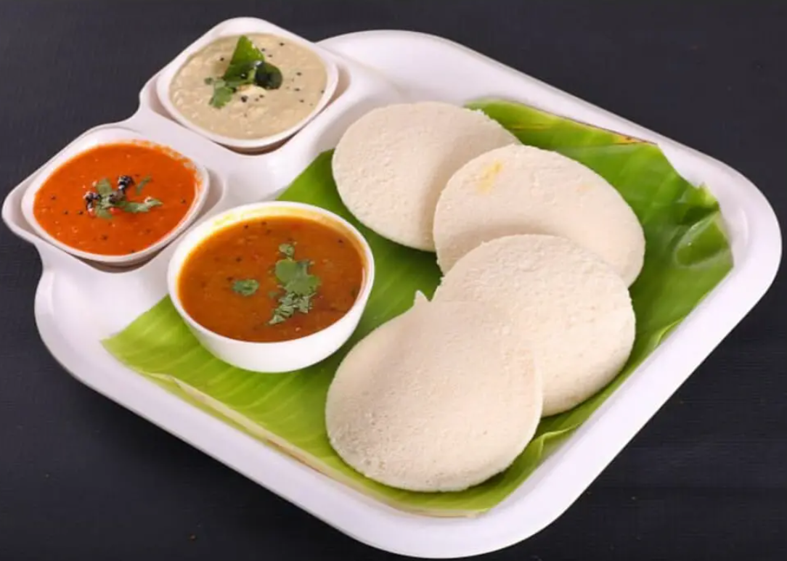
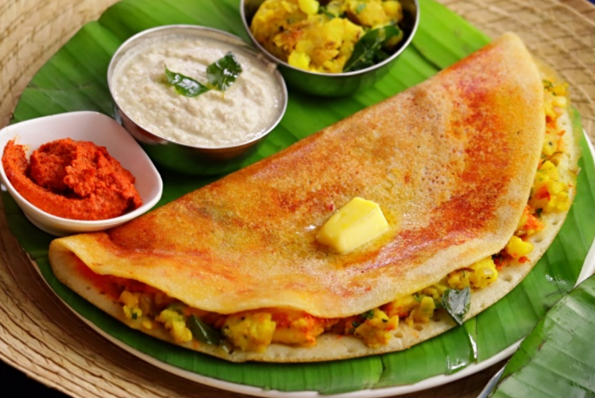
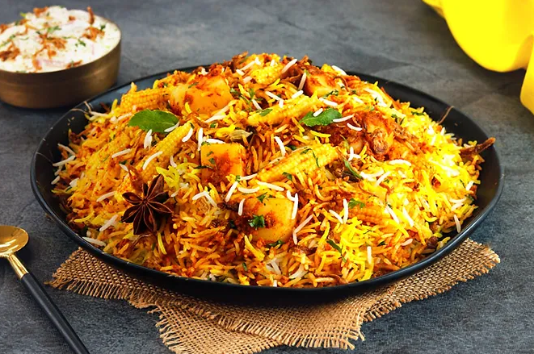
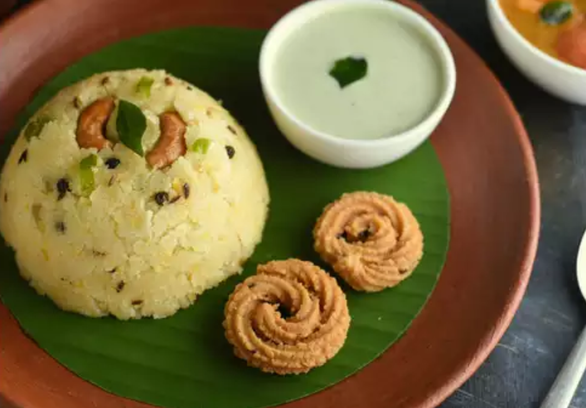
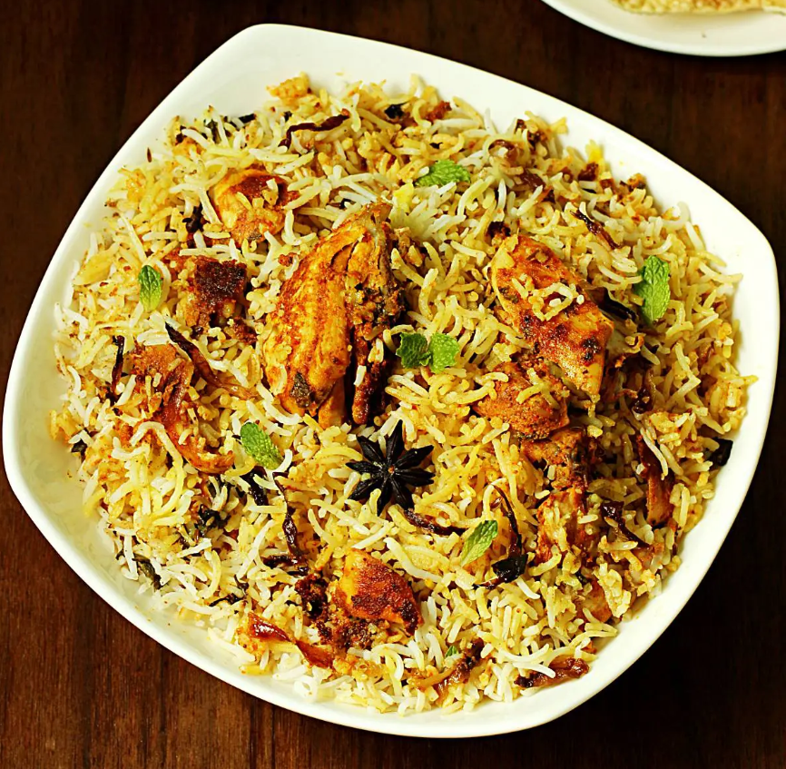
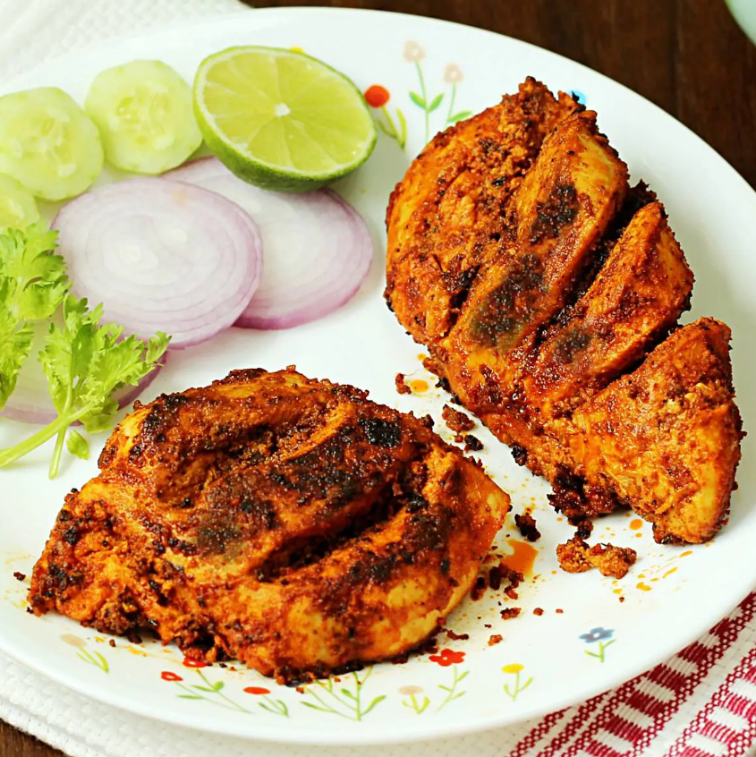
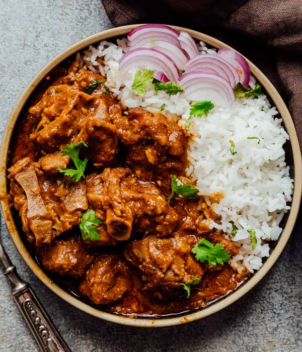

 Idli is a rice and urad
batter cooked into a delicate, soft, and delectable dish. Idli is made using urad dal, a lentil (black gram). Idli is a typical breakfast in South India.
Idli is a favourite breakfast item in India and around the world. Idly is one of the healthiest breakfast options when served with Sambar and Coconut Chutney.
Our Chennai catering service features a variety of idly.
 Dosa, mixture of rice and black or green gram that has been soaked in water is ground
finely to form a batter. Some add a bit of soaked fenugreek seeds. The proportion of rice to lentils is generally 3:1 or 4:1. The batter is allowed to ferment overnight, before being mixed with water to get the desired consistency.
The batter is then ladled onto a hot tava or griddle greased with oil or ghee. It is spread out with the base of a ladle or bowl to form a pancake. It can be made either to be thick like a pancake, or thin and crispy. A dosa is served hot, either folded in half or rolled like a wrap.
It is usually served with chutney and sambar. The mixture of black grams and rice can be replaced with highly refined wheat flour or semolina
 Veg Briyani ,Cooking it with Style,At Charcoal Eats, we delicately balance every spice to bring out the best in the dish and not overpower it.
Our Hyderabadi dum veg biryani is not only satiating to taste buds but to the eyes as well.
The vibrant colours of the nutritious perfectly cooked vegetables and the perfect blend of spices with the aromatic rice is a combination unbeatable.
Slow-cooked in dum pukht (dough-sealed handi), the marinated fresh vegetables are layered with long-grain rice and special spice mix in a sealed handi. Every element leaves its deliciousness and flavour in dum and infuses it into the vegetables and rice.
So, go nowhere when you search for the best veg biryani near me, just check out Charcoal Eats to satiate your cravings.
 Pongal, One of the important dishes that make this popular South Indian festival complete is the Pongal dish, which is prepared with basic ingredients such as rice, moong dal and ghee with basic spices. If you are a fan of savoury Pongal, you just have to try this Ven Pongal recipe.
Always wondered how to make Khara Pongal at home? This quick and easy Pongal recipe will be your answer. Ready in just one hour,
this Venpongal recipe is perfect to be served to your guests. You can also make this savoury Pongal recipe on the days you are in no mood to plan an elaborate meal. Traditionally, this Khara Pongal recipe is cooked around the Pongal festival or Onam, however, the taste of this dish is so amazing that you can make it anytime.
 Hyderabadi biryani, (also known as Hyderabadi dum biryani) is a style of
biryani originating from Hyderabad, India made with basmati rice and meat (mostly mutton). Originating in the kitchens of the Nizam of Hyderabad, it combines elements of Hyderabadi and Mughlai cuisines.
Hyderabad biryani is a key dish in Hyderabadi cuisine and it is so famous that the dish is considered synonymous with the city of Hyderabad.
Chicken freid rice, is a dish that is meant to repurpose leftover rice from a day or two before.
The first time I tried cooking fried rice on my own, I made the mistake of using freshly cooked rice.nothing like what my mother cooked. I don’t even remember if I ate much of that batch of fried rice,
but I certainly learned a big lesson!
Because it was still so moist and soft, resulting dish was far too gummy nothing like what my mother cooked.
 Tandoori chicken, is a tender, flavor-bombed chicken dish that’s a staple in Indian cuisine.
Though traditionally the chicken is grilled in a clay tandoor grill (hence the name), it’s possible to make it at home in your oven. The real stand-out in this timeless recipe is the use of a masala-yogurt marinade that coats the chicken throughout
the cooking process, making it exceedingly juicy and extra flavorful. You can marinate the chicken in the morning, then roast it for just 30 minutes when you’re ready for dinner.
 Mutton rice, Because this curry is slow cooker, the cut of meat you use doesn't matter as much. But I really love using shoulder to make lamb curry.
It has some fat, tender meat and enough bones to give this curry what it needs. And yes, don't get rid of the bones. They stew and add to the curry so totally worth keeping some.